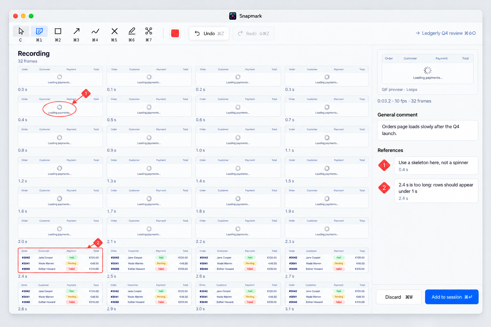
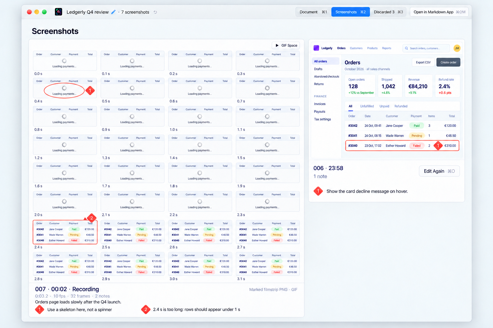
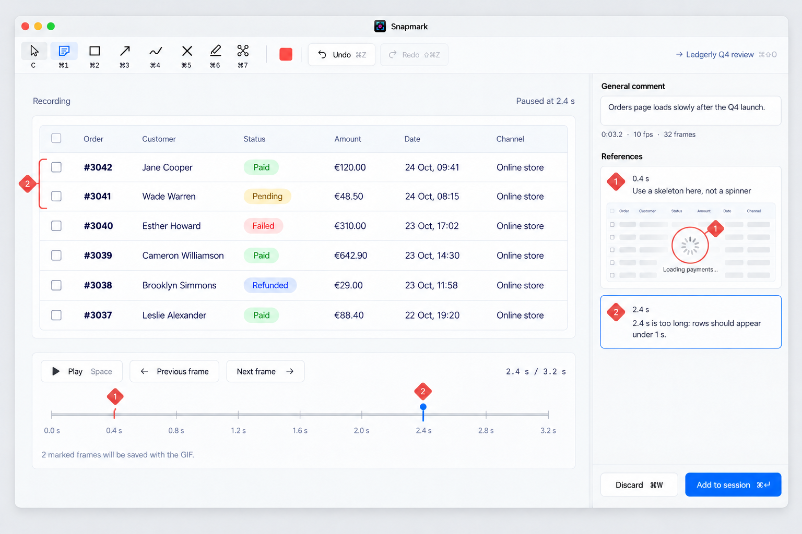
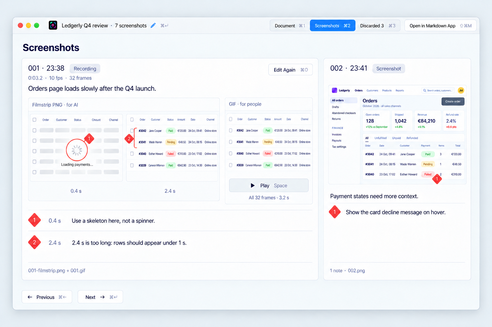
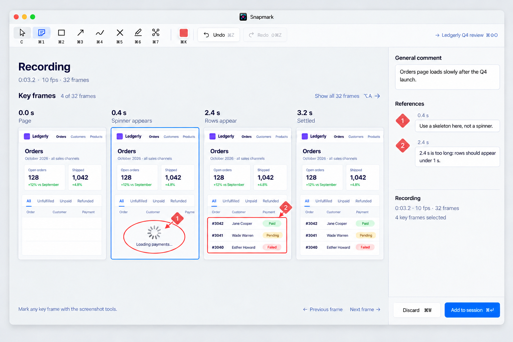
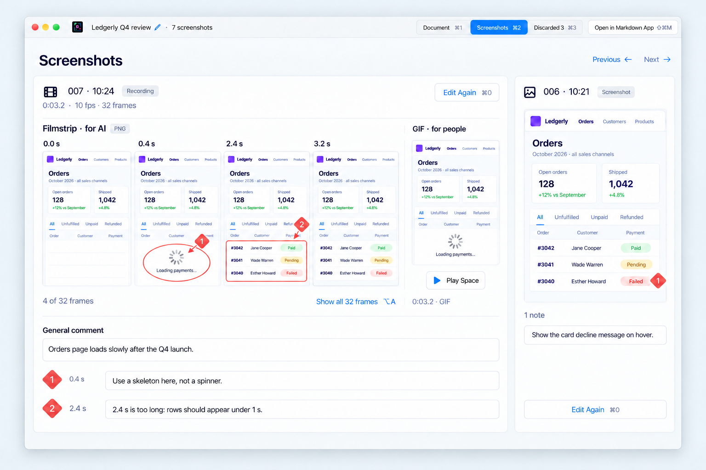

2026-10-26-recording-review · 3 directions · 6 screenshots · generated by Codex, rendered locally
Open live: —
The recording opens as one marked image: all 32 frames in a four-column, eight-row grid, with a time beneath every frame. The ordinary screenshot tools point reference 1 at the spinner at 0.4 s and reference 2 at the first populated rows at 2.4 s. A small looping GIF above General comment preserves motion for people while the marked filmstrip and the two notes carry the feedback into the session and to the AI. The session keeps its familiar Screenshots view, placing the recording beside an ordinary screenshot and offering a small GIF play badge.


Open live: —
The recording stays a large player inside Snapmark’s familiar editor. Space plays or pauses, ← and → step one frame, and the blue playhead rests at 2.4 s as the orders appear. Coral reference ticks at 0.4 s and 2.4 s connect each marked moment to its note; an earlier-frame preview keeps the spinner reference visible while the canvas shows the rows. Adding to the session saves only those two marked frames as a time-labelled filmstrip PNG for the AI, alongside the full 32-frame GIF for people. The session presents both files together beside an ordinary screenshot entry.


Open live: —
Snapmark selects four moments where the Ledgerly page changes: 0.0 s page, 0.4 s spinner appears, 2.4 s rows appear, and 3.2 s settled. The editor opens directly on this horizontal strip, so the owner marks each moment with the familiar screenshot tools and numbered references. A quiet “Show all 32 frames” control expands the selection. The session stores the marked key-frame filmstrip PNG and timestamped notes for the AI beside the GIF for people, with “4 of 32 frames” making the selection explicit.

